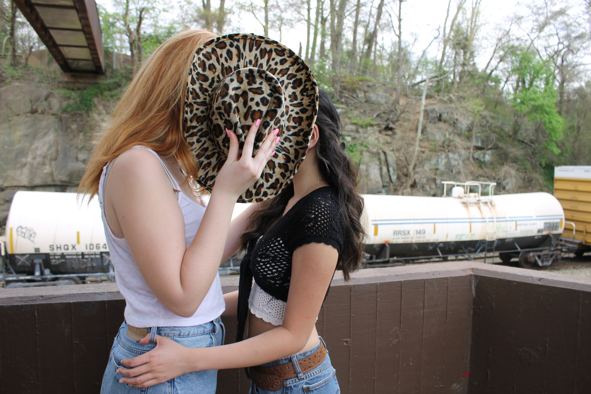
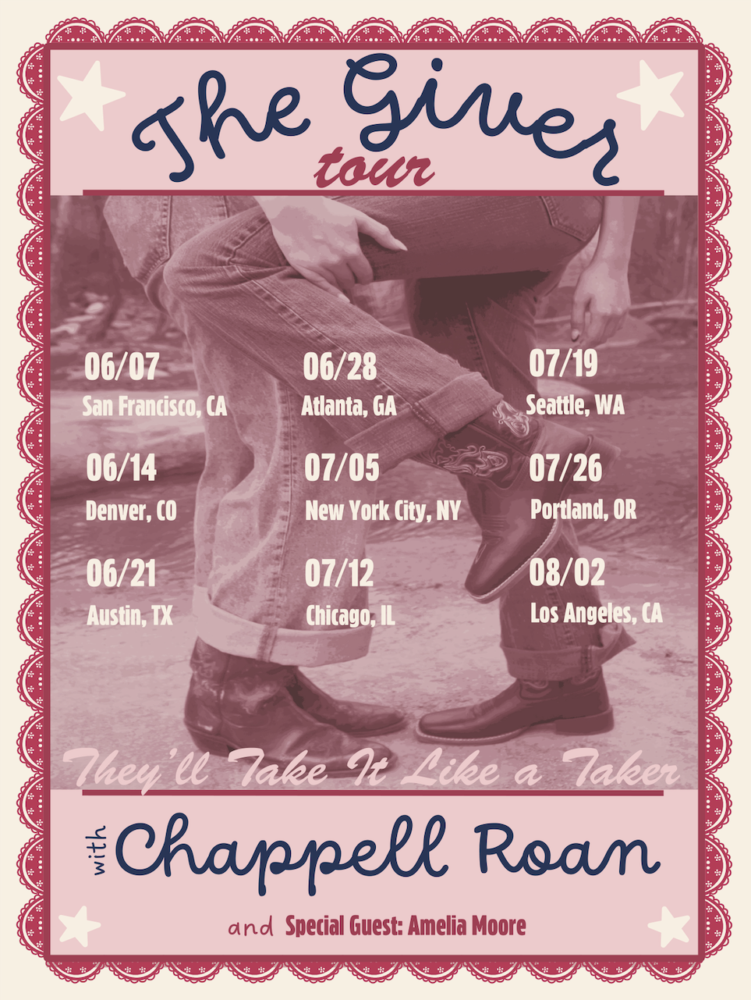
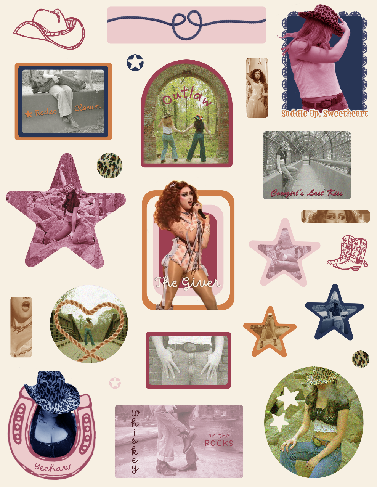
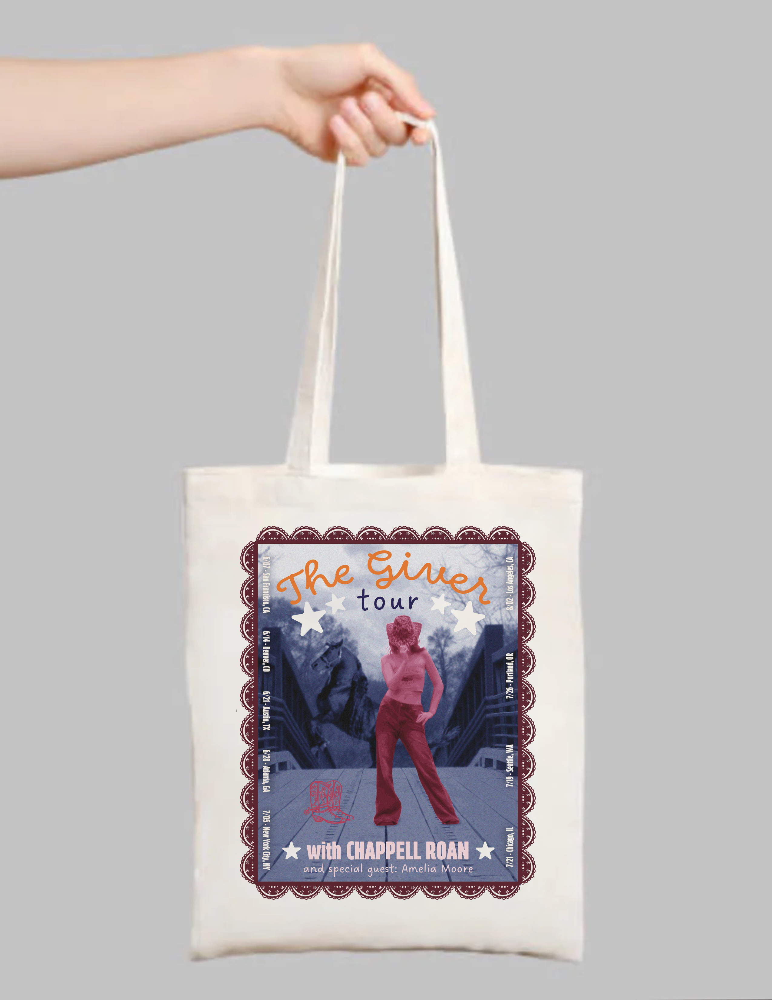

Music Merchandising
2025




This music merchandising project involved my group and I designed merchandise and promotional materials for a conceptual tour. We decided to base our concept around Chappell Roan's single, The Giver. My contribution involved photographing original visual assets (examples above) to provide for our team to edit. We put heavy focus on maintaining brand consistency across all team members and collaborating effectively. My specific designs include a poster, tote bag, and sticker sheet (featured below).


